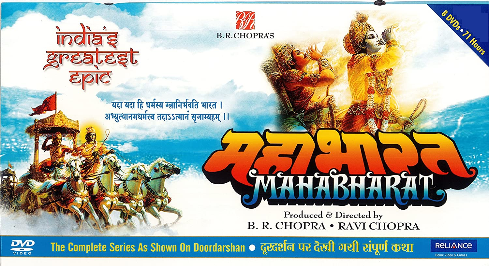
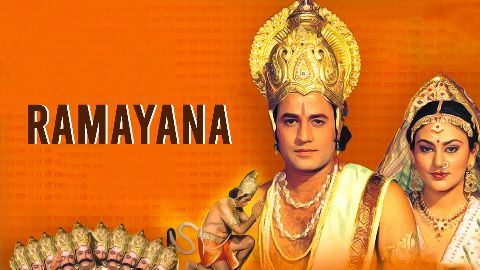
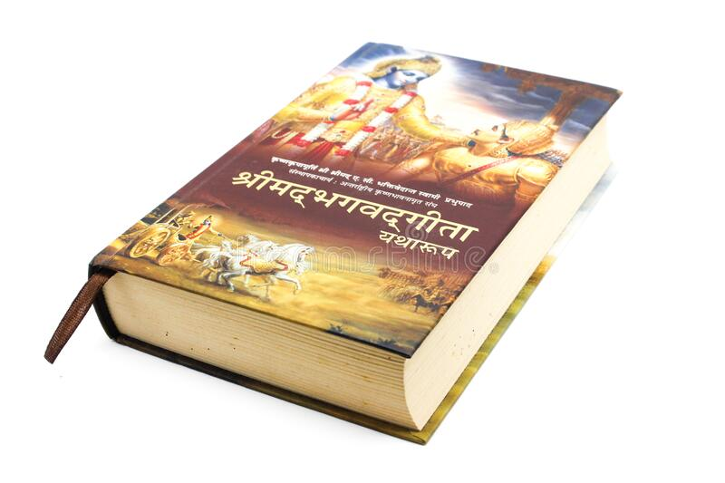
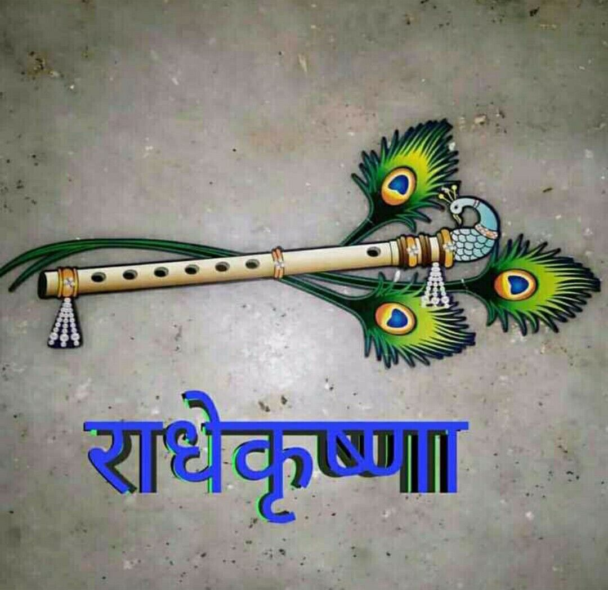

ABOUT
Hello connection currently i am pursuing b.tech in computer science from geetanjali institute of technical studies udaipur I like to do learn coding and new skills and I am a nature worker because nature is the best medicine for all works and I believe in karma yoga, meditation and all ancient arts I do respected.
- Vasudev krishna did says in bhagwad Geeta that --> dedication and patience are enough to gain knowledge
- Swami Vivekananda's says that the wise is man who makes every task interesting.
- Make your struggle your Passion.
EDUCATION
| COURCE | INSTITUTE | YEAR | PER% |
|---|---|---|---|
| 12th Grade | BSJ PINDWARA | 2019 | 80.60% |
| 10thGrade | GOV. SCHOOL JHADOLI | 2017 | 81.50% |
SKILLS
- Game
- Cricket:
This article is about the men's team. For the women's team, see India women's national cricket team.
The India men's national cricket team, also known as Team India or the Men in Blue, represents India in men's international cricket. It is governed by the Board of Control for Cricket in India (BCCI), and is a Full Member of the International Cricket Council (ICC) with Test, One Day International (ODI) and Twenty20 International (T20I) status.
For more information just click th link here-
- Football:
Football, also called association football or soccer, is a game involving two teams of 11 players who try to maneuver the ball into the other team’s goal without using their hands or arms. The team that scores more goals wins. Football is the world’s most popular ball game in numbers of participants and spectators.
For more information just click th link here-
- Martial Art
- Kalaripayattu:Kalaripayattu,also known simply as Kalari, is an Indian martial art that originated in modern-day Kerala, a state on the southwestern coast of India.Kalaripayattu is known for its long-standing history within Indian martial arts. It is believed to be the oldest surviving martial art in India, with a history spanning over 3,000 years.
For more information just click th link here-
- Shaolin kanfu:
Bodhidharma was a semi-legendary Buddhist monk who lived during the 5th or 6th century. He is traditionally credited as the transmitter of Chan Buddhism to China, and regarded as its first Chinese patriarch. According to a 17th century apocryphal story found in a manual called Yijin Jing, he began the physical training of the monks of Shaolin Monastery that led to the creation of Shaolin kungfu. He is known as Dámó in China and as Daruma in Japan. His name means "dharma of awakening (bodhi)" in Sanskrit.
For more information just click th link here-
- Dancing:
- Micheal Jackson:
Michael Joseph Jackson was an American singer, songwriter, dancer, and philanthropist. Dubbed the "King of Pop", he is regarded as one of the most significant cultural figures of the 20th century.
just do click here:
- Prabhudeva:
Prabhu Deva is an Indian dance choreographer, film director, producer and actor who has worked predominantly in Tamil, Hindi, Telugu, and Kannada language films. In a career spanning 32 years, he has performed and designed a wide range of dancing styles and has garnered two National Film Awards for Best Choreography.
just do click here:
- Cricket:
This article is about the men's team. For the women's team, see India women's national cricket team.
The India men's national cricket team, also known as Team India or the Men in Blue, represents India in men's international cricket. It is governed by the Board of Control for Cricket in India (BCCI), and is a Full Member of the International Cricket Council (ICC) with Test, One Day International (ODI) and Twenty20 International (T20I) status.
For more information just click th link here-
- Football:
Football, also called association football or soccer, is a game involving two teams of 11 players who try to maneuver the ball into the other team’s goal without using their hands or arms. The team that scores more goals wins. Football is the world’s most popular ball game in numbers of participants and spectators.
For more information just click th link here-
- Kalaripayattu:Kalaripayattu,also known simply as Kalari, is an Indian martial art that originated in modern-day Kerala, a state on the southwestern coast of India.Kalaripayattu is known for its long-standing history within Indian martial arts. It is believed to be the oldest surviving martial art in India, with a history spanning over 3,000 years.
For more information just click th link here- - Shaolin kanfu:
Bodhidharma was a semi-legendary Buddhist monk who lived during the 5th or 6th century. He is traditionally credited as the transmitter of Chan Buddhism to China, and regarded as its first Chinese patriarch. According to a 17th century apocryphal story found in a manual called Yijin Jing, he began the physical training of the monks of Shaolin Monastery that led to the creation of Shaolin kungfu. He is known as Dámó in China and as Daruma in Japan. His name means "dharma of awakening (bodhi)" in Sanskrit.
For more information just click th link here-
- Micheal Jackson:
Michael Joseph Jackson was an American singer, songwriter, dancer, and philanthropist. Dubbed the "King of Pop", he is regarded as one of the most significant cultural figures of the 20th century.
just do click here:
- Prabhudeva:
Prabhu Deva is an Indian dance choreographer, film director, producer and actor who has worked predominantly in Tamil, Hindi, Telugu, and Kannada language films. In a career spanning 32 years, he has performed and designed a wide range of dancing styles and has garnered two National Film Awards for Best Choreography.
just do click here:
FAVOURITE'S BOOKS
All image's are clickable image so you can click- MAHBHARAT: Mahabharat teach that what should we not do in our life
 - RAMAYAN:
Ramayan teach that how should we behavior from elder person
 - BHAGAWAT GEETA:
The most imporatant book it's not just a book this is knowledge of life bhagawat geeta teach that how should we live of life

Note: Please just watch episode's of all grahanth before from die and believe me your life will be going to different path
Radhe Radhe 🙏🙏
MY FAVOURITE SONG'S
Note: Just click the photo
MY THOUGHT'S

Note: Just click the photo
MY PROFILE'S
 linkdin :lalit-prajapat
linkdin :lalit-prajapat Instagran :lalit_tak007
Instagran :lalit_tak007
CONTACT
Phone no. :8433676204
Email :lalitprajapat@gmail.com